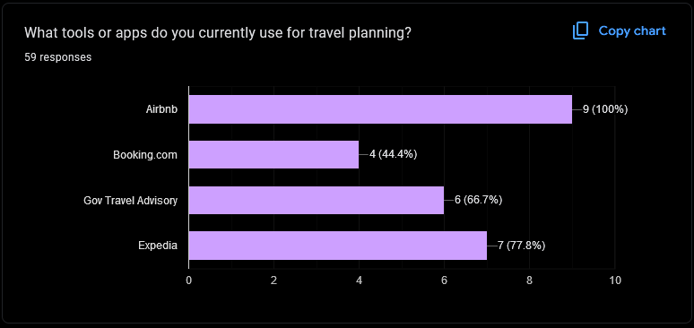
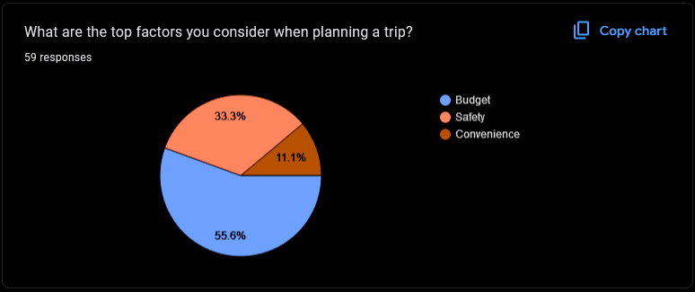

Introduction
Over recent years, advancements in technology have transformed how we accomplish daily tasks, from managing finances to planning trips, making everything accessible at our fingertips. This shift has been especially notable in travel, where apps provide on-demand booking, navigation, and experiences. Yet, as our reliance on technology grows, there is increasing demand for apps that not only offer convenience but also deliver seamless, intuitive experiences. To further enhance travelers’ well-being, our super app will also incorporate essential travel safety guidelines, offering a comprehensive tool for modern-day explorers.

Understanding the Problem
TripFellow Inc.’s super app must not only provide critical safety information and travel services but also follow established UI/UX conventions to deliver a seamless user experience. This involves designing intuitive navigation, clear visuals, and smooth interactions that allow users to access essential functions effortlessly. A focus on minimalism and clarity is crucial, especially during stressful situations such as conflicts or natural disasters. Additionally, the app must maintain accessibility, ensuring information is easy to find and understand, while delivering real-time updates and alerts.
Poor design choices, like cluttered interfaces or unclear labels, could overwhelm users, making it harder to access vital information. By incorporating best practices in UI/UX, including responsive design and accessibility standards, the app can enhance usability, ensuring travelers can plan their trips while feeling safe and confident in challenging environments.
Research Method
In designing TravelFellow, I followed a structured research approach to create a user-friendly app. First, I conducted a questionnaire to gather insights about user travel habits, preferences for online booking, and essential features like travel advisories and group trip management. This helped me understand user needs and desires for an all-in-one travel app.
Next, I reviewed popular travel websites such as Booking.com, Expedia, and Kayak to analyze their user interfaces. These platforms gave me inspiration, especially Booking.com's minimalist design, which prioritized key information without overwhelming users. The research helped identify best practices for creating an intuitive, easy-to-navigate app.
I also developed two user personas Alex Johnson, a frequent traveler needing efficient trip management, and David, an occasional traveler seeking simplicity. These personas helped guide my design decisions, ensuring TravelFellow caters to both frequent and occasional travelers.
Finally, using the questionnaire data and insights from site analysis, I created user journey maps, flow diagrams, and wireframes to design an app that optimizes features like trip management, travel advisories, and group participation. This approach ensures that TravelFellow provides a seamless and enjoyable experience for all users.
Research and Analysis
In the research and analysis phase of TravelFellow, I explored several popular websites that offer services related to car rentals, accommodations, and travel advisories. Sites like Travel.gc.ca provided crucial insights into safety regulations, while platforms such as Expedia, Airbnb, Booking.com, and Kayak helped me understand user preferences and booking trends. This analysis revealed what travelers value most and highlighted features that could enhance our app’s offerings.
During my research, I was particularly drawn to the brutalist design of Booking.com. Its straightforward and minimalist aesthetic stood out to me, emphasizing functionality without unnecessary distractions. This approach not only enhances user experience by making navigation intuitive but also aligns well with the core values of TravelFellow. I appreciate how this design choice effectively prioritizes content and usability, inspiring me to incorporate similar principles into our app for a more engaging and efficient user experience.
I conducted a research study using a Google Form to gather insights on travel habits and preferences for the design of TravelFellow. The questionnaire asked users about how often they travel, what they prioritize when planning a trip, and the tools they currently use. It also focused on understanding the importance of features like real-time travel advisories, checklist reminders, and ease of booking. This study was essential to understand user needs, gauge interest in a “super app,” and refine features for an optimized travel experience.
To ensure the research study was conducted ethically, the Google Form included a consent section where participants were informed about the study’s purpose and their voluntary involvement. The form clearly explained how the data would be used, emphasizing confidentiality and anonymity. Participants had to explicitly agree to these terms before proceeding with the questionnaire. This step was important to maintain ethical standards and ensure that all participants understood their rights and the scope of the research before sharing their travel preferences and habits.


The results of the study revealed that the majority of participants prefer online booking over traditional methods like travel agencies or packages. This insight is crucial, but it also highlights the importance of incorporating the advantages of travel packages and agencies into the app to create a well-rounded "super app." Additionally, most respondents expressed strong interest in receiving travel advisories tailored to their trips. Many also indicated that they would find the app more appealing if they could add friends as participants to better plan and manage group trips.
Now that we have gathered and analyzed the results from our research study, we can move forward with the next steps of the design process. This involves creating detailed user personas, which will help us understand our target audience better. We will also design user journey maps to visualize the steps users take when interacting with the app. Flow diagrams will be developed to outline the app's functionality, followed by wireframes to lay out the app's structure and interface. These steps are critical in building an intuitive and user-friendly product.
User Personnas
As part of the design process, I created two user personas to guide the development of TravelFellow. The first persona is Alex Johnson, a travel blogger who frequently visits countries and often needs up-to-date travel advisories due to potential risks in certain regions. He values efficiency and real-time updates and wants an app that makes managing multiple trips easier, including the ability to add friends to his travel plans.
The second persona, David, is a middleaged software consultant who only travels occasionally. He prefers simplicity and wants all his needs in one place from flight and hotel bookings to travel advisories. Both personas helped identify the key features that need to be prioritized, ensuring the app caters to frequent travelers like Alex while remaining user-friendly for occasional users like David.
By developing these two user personas, we effectively covered the extremes of our target audience: Alex Johnson, the frequent traveler, and David, the occasional vacationer. This approach ensures that TravelFellow caters to the diverse needs of users from those who require comprehensive and real-time information for multiple trips to those who prioritize simplicity and ease of use for their infrequent getaways. This balance allows us to create a versatile app that meets varying user expectations and enhances the overall travel experience for everyone.
David's Journey Map
During the design of TravelFellow, I paid close attention to each step of David's journey and the frustrations he might face with a poorly designed app. From simplifying the registration process to ensuring real-time updates during travel, every feature was crafted with ease of use in mind. I concluded that simplicity, clarity, and efficiency are crucial for an enjoyable user experience. Moving forward, I need to refine elements like post-travel feedback and real-time notifications to ensure David and users like him have the most seamless experience possible.
Flow Diagram
if the image does not load: https://i.imgur.com/UFXFsyd.png

The flow diagram design for TravelFellow starts with a user-friendly login or registration option, ensuring that sessions are saved for seamless user experience. From the header, users can easily navigate to various services, including car rentals, flights, hotel bookings, and activity reservations. Each service directs users to a dedicated home page featuring trending choices, showcasing popular and affordable options. Additionally, the “Trip Manager” button leads to a dashboard where users can create trips, add friends, and manage their entire travel experience, including bookings, travel advisories, reminders, and checklists.
The flow diagram for searching services in TravelFellow is designed for efficiency and ease of use. When users filter results and search for specific cities, relevant information is displayed directly on the page, minimizing the need to navigate to multiple pages. This streamlined approach allows users to see important details at a glance. If they find something appealing, they can click on it to access the product page, such as a hotel room or car rental, where they can continue with the booking process seamlessly.
Additionally, before booking, users will encounter travel advisories and essential information, such as vaccination and visa requirements. This crucial data will be automatically added to the trip checklist, ensuring users are fully aware of all necessary prerequisites before their journey. This feature enhances preparedness and streamlines the planning process, making it easier for users to focus on their travel experience without worrying about missing important details.
Creating prototypes: Wireframes
In the design process of TravelFellow, one of the initial steps involved creating wireframes as the first prototypes. Wireframes are basic, low-fidelity layouts that help visualize the structure of an app without focusing on design elements like colors or detailed aesthetics. These prototypes allow designers to map out the user flow and placement of key features. Wireframes serve as a blueprint for the user interface, helping to define functionality and navigation before moving on to more detailed, polished designs for testing and development.
if the image does not load: https://i.imgur.com/L4Nfhhh.png
Final Designs
Now that the wireframes for TravelFellow have been completed, I can proceed to design the final version of the app. I use Figma to bring the wireframes to life and focus on creating a cohesive, functional layout. For this app, I decided to follow a brutalist design pattern, prioritizing simplicity and clarity. To keep the interface visually appealing yet professional, I chose a blue color palette. This ensures that the app looks modern and user-friendly while offering a reliable and structured experience for travelers.
Start Page:
Login/Register Page:
Hotel Results Page:
Car Results Page:
Product Page (scroll) Page:
Product Page (similar to car and activity renting):
Trip Manager Page:

Travel Advisory Page:
Trip Saving/Reviews Page: